Her skal vi gå gjennom det du trenger for å få i gang lasting av Altinn 3 skjemaer til ISEE, steg for steg.
Måten vi gjør det ved å gå gjennom hvordan prosessen er satt opp for hagebruksundersøkelsen, så har du et konkret eksempel å se på underveis. Det kan stort sett kopieres så lenge du endrer filstier og navn fra hagebruk til å passe egen undersøkelse
Vi kommer til å være innom Transfer service og Kildomaten, men det er ikke krav om forkunnskaper for å komme gjennom denne veiledningen.
Når prosessen er satt opp for en undersøkelse så vil det i de fleste tilfeller ikke være behov for å endre på det, så det er vanligvis en engangsjobb å få på plass.
Eksemplene som vises er for å laste produksjonsdata, dersom du ønsker å sende ned skjemaer fra test-altinn (tt02) til DB1T kan du se på tegningen av den overordnede flyten.
Prosessen er identisk, men filstiene er ulike. Se skjermbildet for flyten nedenfor for eksempel på oppsettet.
Det anbefales å sette opp test-løpet, så du slipper å lage rot i DB1P.
Overblikk over prosessen.
I prosessen er det en del overføringer som må settes opp, men de kjøres automatisk når det først er i gang. Stegene vi skal gjennom er:
1. Transfer service fra datamottak til din kildebøtte
2. Kildomaten
3. Transfer service fra din produktbøtte til frasky-bøtten
4. Transfer service fra din frasky-bøtte til bakken.
5. Opprette mappestruktur på stammen
6. MoveIT og lasting til ISEETestløpet krever at du gjør alle stegene dobbelt opp. Én gang for prod, én gang for test. Det er viktig å ikke blande disse løpene i hverandre, og at filstiene viser til en prod-mappe eller test-mappe. Se flytdiagrammet nedenfor for konkrete filstier.
For å sette opp testløpet kan det foreløpig være nødvendig å kontakte kundeservice for å åpne på tilganger, slik at du kan overføre filer fra suv-altinn-data-t, datamottaket hvor skjemaer fra test-altinn / tt02 havner, til prod bøtten din.
Til vanlig så har du kun tilgang til suv-altinn-data-t fra test-teamet, som fungerer på Dapla, men siden test-teamet ikke kan overføre filer til bakken så er det ikke mulig å teste innlasting til ISEE med skjemaer fra tt02 uten å gå via prod bøtten. Derfor trenger du at det åpnes for dette.
Flytdiagram for prosessen
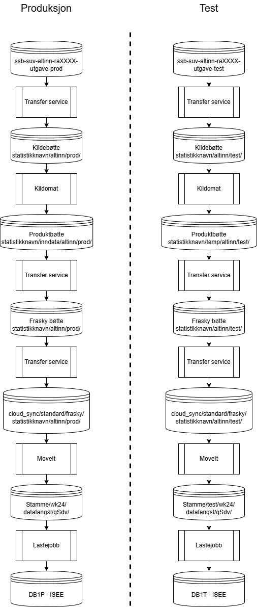
For informasjon om hvordan mappestrukturen i bøttene dine skal være, se navnestandarden.
Transfer service fra datamottak til din kildebøtte.
Det første du skal gjøre er å sette opp transfer service fra datamottaket til din kildebøtte. Du kommer til å være godt kjent med å sette opp transfer service når vi er ferdige med dette, og det er en del detaljer som må stemme. Så det er bare å holde hodet kaldt, dobbeltsjekke at alt stemmer, prøve seg frem og be om hjelp hvis du står fast.
Siden det første steget involverer kildebøtta så trenger du å være data-admin på teamet ditt (du kan sjekke rollene dine i dapla ctrl) og søke om midlertidig tilgang via just in time (JIT) tjenesten.
For å komme seg til vinduet hvor du kan sette opp en transfer service går du først inn på denne lenken: https://console.cloud.google.com/
Deretter skal du klikke på en knapp øverst i skjermbildet på venstre side, til høyre for GoogleCloud logoen og få opp menyen hvor du velger hvilket prosjekt du skal jobbe med
Her skal du velge ditt team, du kan se teamnavnet i dapla-ctrl. Du skal inn på prosjektet som har ditt-teamnavn-kilde-p i navnet sitt. Hvis du ikke ser prosjektet ditt, sjekk at du har valgt ssb.no som organisasjon under “Select a resource”.
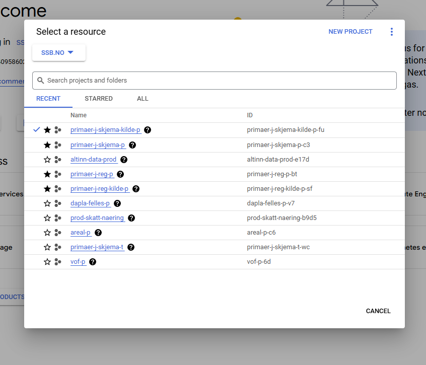
Når du er inne på prosjektet ditt kan du klikke i søkefeltet på toppen av siden, søke på “Storage transfer” og velge den.
Nå skal vi inn på “Transfer jobs” og klikke på “CREATE TRANSFER JOB”.
Noter deg hvordan du fant denne menyen, for litt senere i prosessen skal vi inn på et annet prosjekt og sette opp flere transfer jobs.
Datamottaket ligger i team SUV sitt dapla team som heter “suv-altinn-data-p”, og du kan finne skjemaene i bøtter med navnestrukturen ssb-suv-altinn-raXXXX-01-prod. Merk at 01 viser til versjonen av skjema, så hvis du får en ny versjon av skjemaet ditt vil den ha et annet versjonsnummer.
Hagebruksundersøkelsen har RA-nummeret 0571, så datamottaket sitt bøttenavn vil i dette tilfellet være ssb-suv-altinn-ra0571-01-prod.
Mappestrukturen i datamottaket er slik at det først er en mappe for året skjemaet ble mottatt, deretter for måneden, deretter for dagen, og her finner du hver enkelt innsending. I transfer job henviser vi bare til den øverste mappen, den fører automatisk med seg alt som ligger lenger “nede” i mappestrukturen.
Se på bildene for å se hvordan filstier og innstillingene for jobben skal se ut.
Det er lurt å skrive tydelig i “Description” feltet før du trykker “CREATE” hvilken undersøkelse det gjelder og hva transfer jobben gjør. Det sparer andre i teamet (og deg selv) forvirring senere.
Et lite tips er å la denne jobben kjøre ofte, siden det vil gjøre at skjemaene behandles fortløpende i kildomaten istedenfor å komme i store overføringer. Andre overføringer trenger ikke kjøre mer enn en gang om dagen.
I denne jobben skal ikke filer slettes.
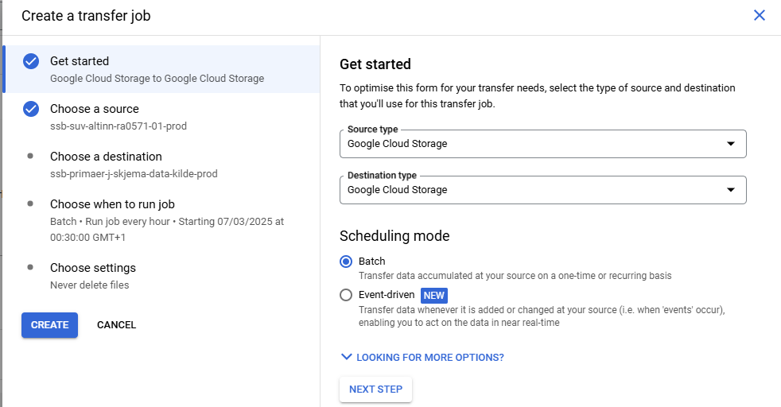
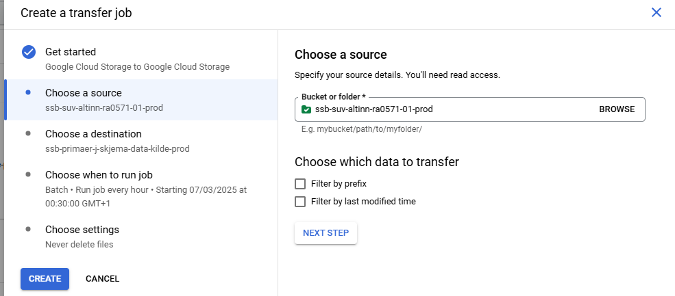
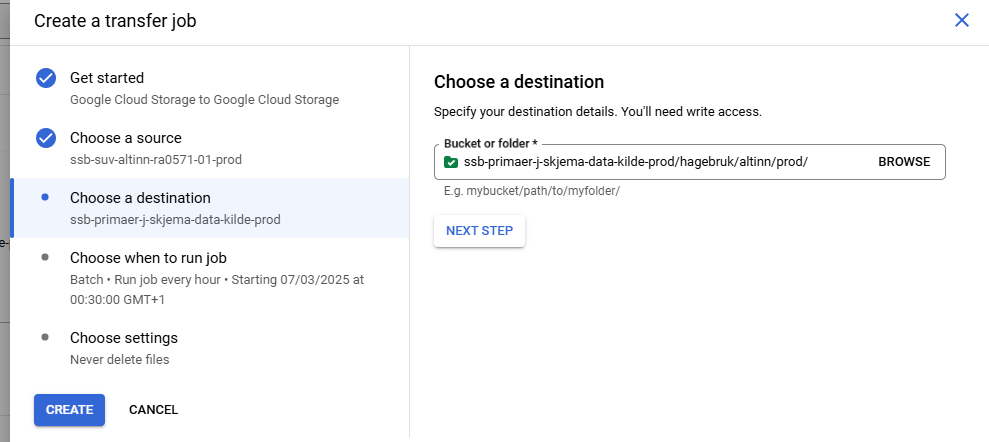
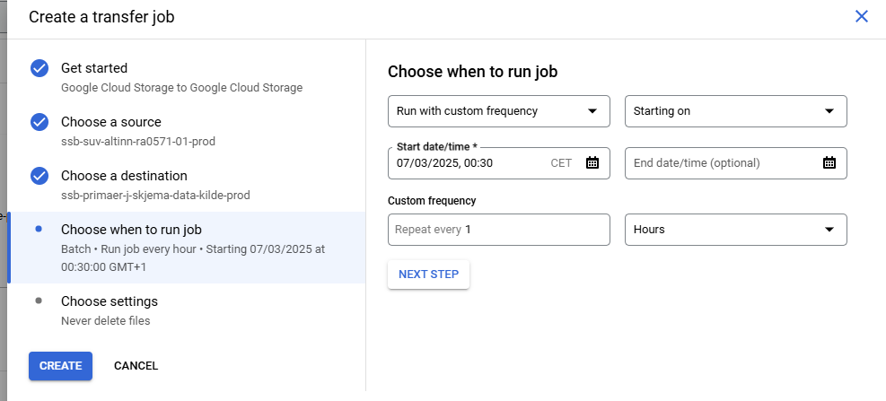
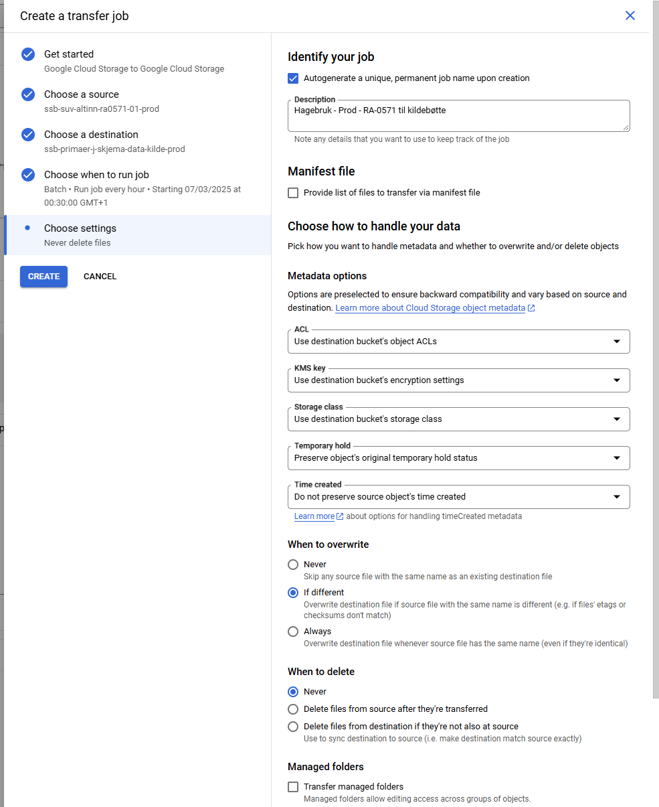
Kildomaten
Nå skal vi gå løs på den mest tekniske delen av oppsettet. Her blir det nok mye prøving og feiling for å få alt til å fungere, så ikke mist motet.
Kildomaten er en tjeneste som automatiserer bearbeiding av data som kommer inn i kildebøtta. Etter at den er satt opp så vil den automatisk bearbeide filer som havner i mappen den er stilt inn til å følge med på. Den vil enkelt forklart bearbeide hvert enkelt skjema hver for seg, og sende videre til produkt bøtta.
For mer informasjon om kildomaten kan du se veiledning for kildomaten her.
I første omgang holder vi det enkelt og setter opp rammen som vi senere skal fylle ut.
De to filene nedenfor skal opprettes og plasseres i mappen dapla-team-iac/automation/source-data/dapla-team-prod/hagebruk/
config.yaml
folder_prefix: hagebruk/altinn
memory_size: 1process_source_data.py
import dapla as dp
from altinn import isee_transform, create_isee_filename
tags = ["SkjemaData", "Kontakt", "Brukeropplevelse"]
mapping = {
"Altinn3 navn": "ISEE navn"
}
def main(source_file):
if source_file.endswith(".xml"):
fil = isee_transform(source_file, mapping, tag_list=tags) # transformerer XML'ene fra kildedatabøtta til pandas dataframe med riktig ISEE-feltnavn
fil["FELTNAVN"] = fil["FELTNAVN"].str[:25].str.upper()
if "altinn/test/" in source_file:
dp.write_pandas(df = fil, gcs_path = f"ssb-primaer-j-skjema-data-produkt-prod/hagebruk/temp/test/altinn/{create_isee_filename(source_file)}", file_format="csv", index=False, sep=";")
elif "altinn/prod/" in source_file:
dp.write_pandas(df = fil, gcs_path = f"ssb-primaer-j-skjema-data-produkt-prod/hagebruk/inndata/altinn/{create_isee_filename(source_file)}", file_format="csv", index=False, sep=";")
else:
raise ValueError (f'source_filen sitt navn inneholder verken altinn/test/ eller altinn/prod/: {source_file}')Filstiene i process_source_data.py må du endre nå, mappingen kan du utsette til du er ferdig med å sette opp resten av overføringene.
Det er vanskelig å sjekke om mappingen din stemmer uten å ha forsøkt innlasting til ISEE, så det kan være greit å ordne resten av løpet først.
Mapping brukes for å omkode nytt variabelnavn fra Altinn 3 til ISEE feltnavn og er nødvendig for at dataene dine skal bli synlige i ISEE.
Det er viktig at filen som lages av kildomaten ikke har feltnavn som er lengre enn 25 tegn, er en csv fil og at det er semikolon som er skilletegnet. Dette er tatt høyde for i malen over.
Transfer service fra din produkt bøtte til frasky bøtten
Her skal vi starte med å flytte filene som kildomaten vår lager til bakken. Før filene kan sendes til bakken, så skal de innom frasky-bøtta. Det betyr at flyttingen ned til bakken involverer to transfer jobs.
Disse jobbene trenger ikke kjøre mer enn én gang om dagen, men pass på at jobben som flytter fra produkt til frasky kjører før jobben som flytter filer til bakken. Hva du kan sette på tidspunkt er vist på “Choose when to run job” bildene for hver jobb.
Først skal du skifte hvilket prosjekt du jobber i. Nå skal vi være i teamet som heter ditt-teamnavn-p, altså det som ikke har kilde i navnet sitt. I dette eksempelet er riktig team primaer-j-skjema-p.
Deretter skal transfer jobs settes opp på samme måte, se på skjermbildene for å se hvordan det skal se ut.
OBS! Det er viktig at filene slettes fra kilden etter flytting. Hvis det ikke slettes, så overføres samme skjema flere ganger og skaper enormt mange dubletter i ISEE.
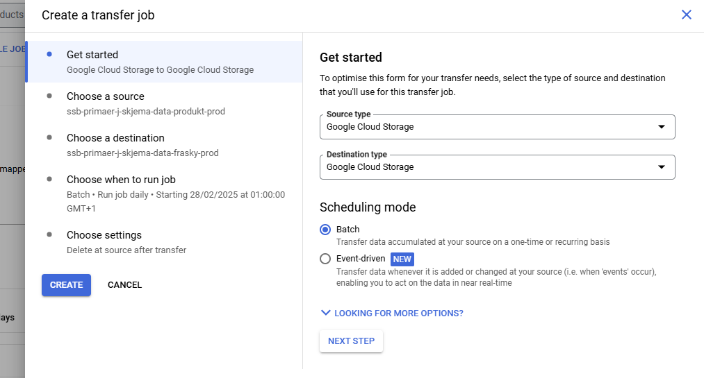
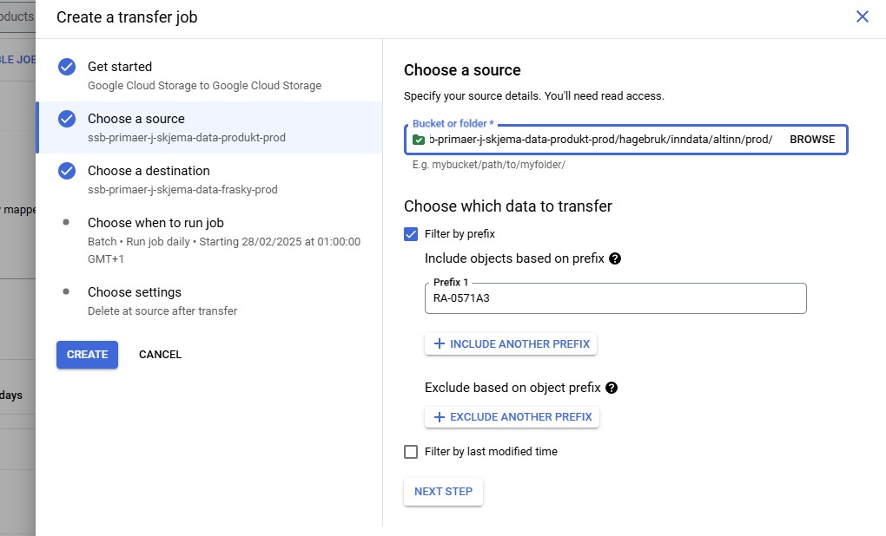
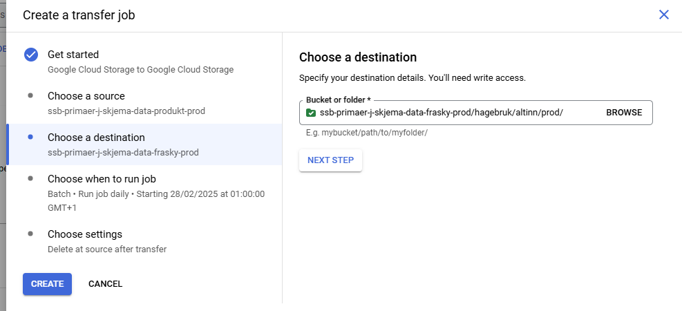
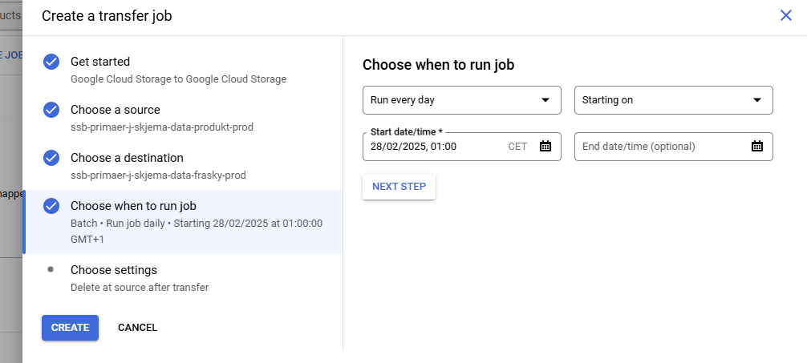
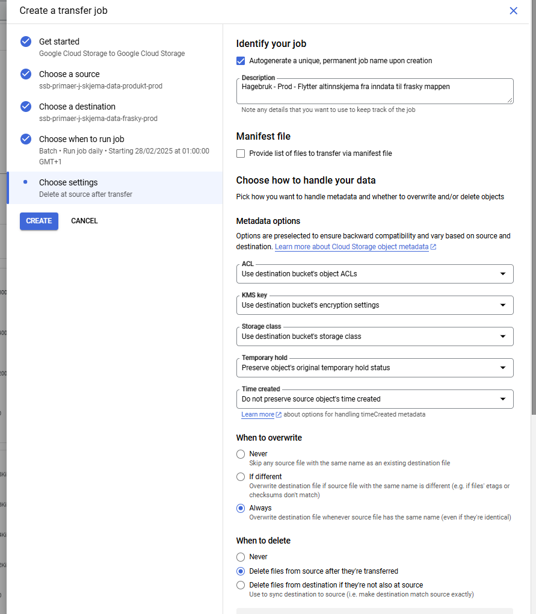
Transfer service fra din frasky bøtte til bakken
I dette steget skal du fortsatt være i “ditt-teamnavn-p” prosjektet.
Nå flytter vi filene ned til bakken. Måten mottaket på bakken er lagt opp er at det finnes en mappe på linux for ditt dapla team under området cloud_sync.
Det vil ha filstien cloud_sync/team-navn/…
OBS! Det er viktig at filene slettes fra kilden etter flytting. Hvis det ikke slettes, så overføres samme skjema flere ganger og skaper enormt mange dubletter i ISEE.
Måten du skal sette opp transfer service kan du se her:
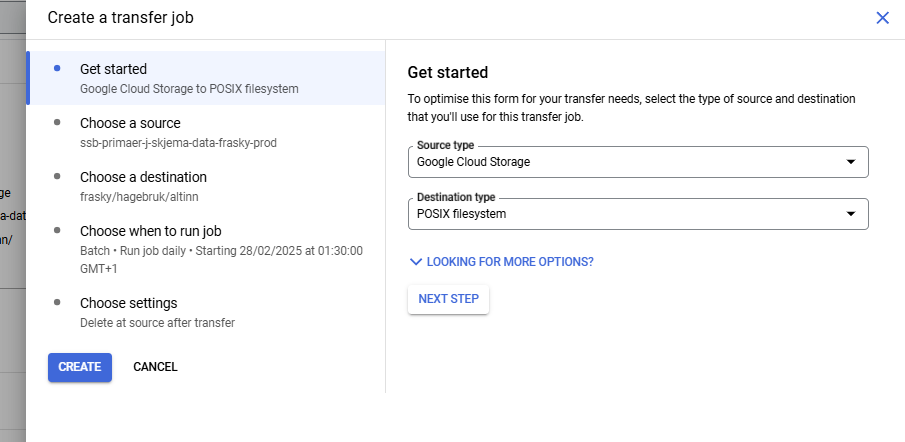
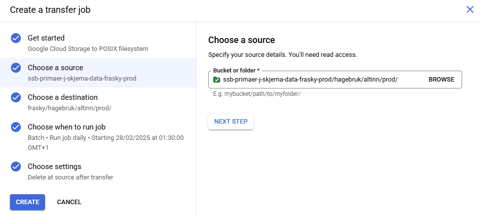
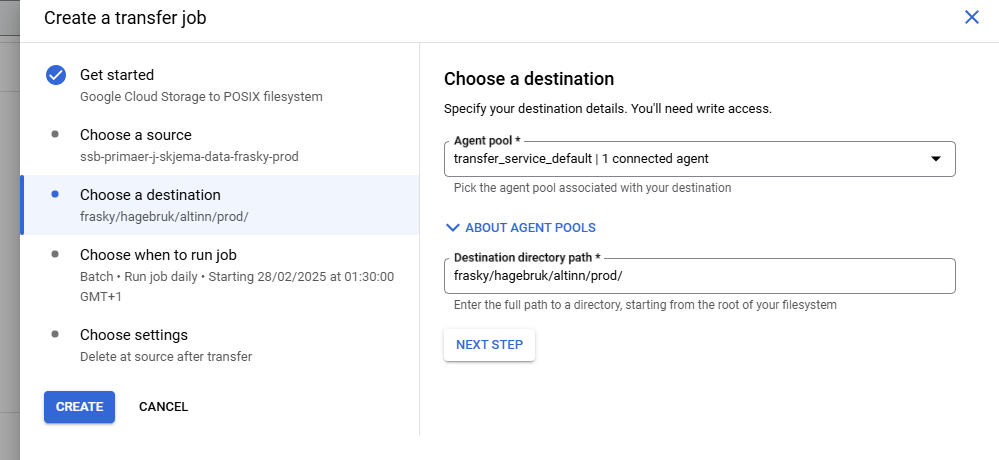
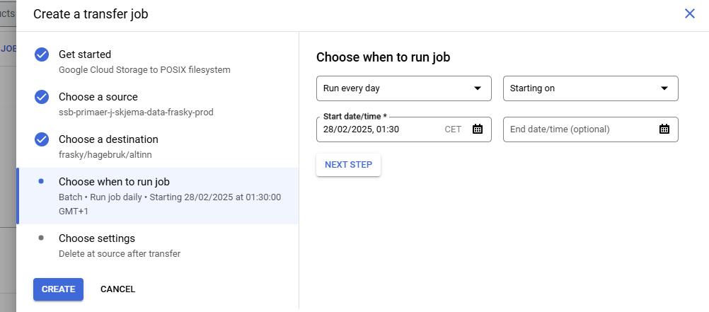
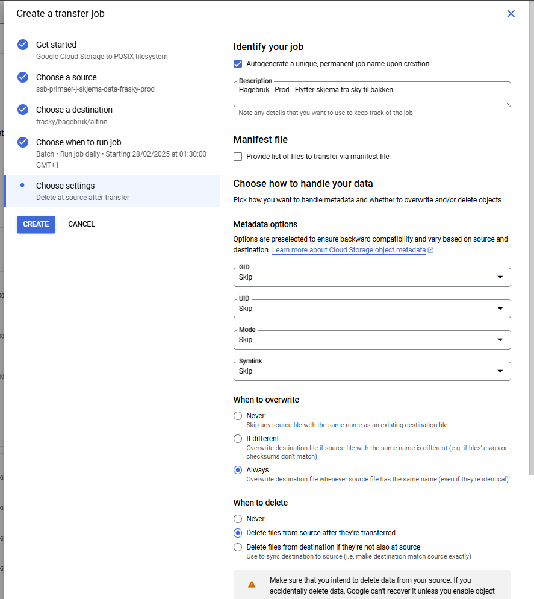
Når du har satt opp transfer service så skal du ned på bakken og opprette noen mapper på linux. Samme sted som stammene ligger så finnes også et område som heter cloud_sync, det er dit vi skal nå.
Ditt dapla team vil ha en egen mappe i cloud_sync som du skal finne.
På bakken er det ett mottak for kildedata (mappen som heter kilde) og ett for annen data (mappen som heter standard). Det er “standard” vi skal bruke. Det vil si at vi skal forholde oss til cloud_sync/ditt-teamnavn/standard/frasky.
I den mappen skal du opprette mappen “altinn” og den skal inneholde to undermapper, “prod” og “test”.
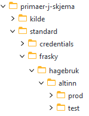
Opprette mappestruktur på stammen
For at innlasting til ISEE skal fungere så trengs det noen spesifikke mapper på stammen.
Dette er nødvendig for at den automatiske lastejobben skal fungere, og så lenge du følger dette oppsettet så burde selve innlastingen gå fint.
I skjermbildet vises det oppsett som inkluderer mappene som trengs for test-løpet. Dette løpet må settes opp separat fra prod-løpet.
Se skjermbildet med overordnet flyt øverst på siden for å se forskjellen på filstiene.
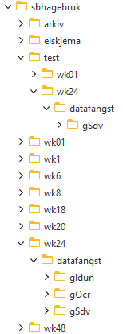
MoveIT og lasting til ISEE
Nå som vi har satt opp mappestrukturene som trengs så har vi en positiv overraskelse, det neste steget er enkelt for deg som statistikkansvarlig.
Først skal du opprette skjemaet i SFU og ISEE. Det skal hete RA-XXXXA3, hvor XXXX er ditt RA-nummer.
Deretter skal du sende en mail til kundeservice. I den skal du: - si at du trenger en MoveIt overføring fra cloudsync/standard/undersøkelse/altinn/prod/ og til din stamme sin wk24/datafangst/gSdv/ mappe. - at du trenger opplasting fra datafangst/gSdv mappen din til ISEE.
Du kan ta utgangspunkt i malen nedenfor. Hvis du ikke setter opp test-løpet så kan du fjerne de bitene.
Hei!
Trenger to moveit jobber og innlasting til ISEE fra stammen.
Jeg skal overføre RA-XXXXA3 til ISEE, delregisternummer 123456
MoveIt som flytter fra: /ssb/cloud_sync/primaer-j-skjema/standard/frasky/hagebruk/test/altinn/ Til: /ssb/stamme02/jordbruk/sbhagebruk/test/wk24/datafangst/gSdv
Test jobben burde kjøre 20 minutter over hver time så det rekker å bli med på lastingen til DB1T.
MoveIt som flytter fra: /ssb/cloud_sync/primaer-j-skjema/standard/frasky/hagebruk/prod/altinn/ Til: /ssb/stamme02/jordbruk/sbhagebruk/wk24/datafangst/gSdv
Begge MoveIt jobbene må slette filer fra cloud_sync når det er flyttet.
Trenger også at det opprettes lastejobb fra wk24 og test/wk24 til DB1P og DB1T.
OBS! Det er viktig at filene slettes fra kilden etter flytting. Hvis det ikke slettes, så overføres samme skjema flere ganger og skaper enormt mange dubletter i ISEE.
Når disse jobbene er satt opp så får du data inn i ISEE!
Prosessen er satt opp, hva nå?
Du burde nå få data lastet inn i tabellene ISEE er bygd på, som er et godt stykke men likevel er det en del jobb igjen.
Det er mange detaljer som skal stemme for at dataene som lastes inn skal dukke opp riktig i ISEE. Hvis mappingen ikke stemmer så vil ikke dataene dine bli synlige i ISEE, selv om de er lastet inn i systemet.
Du må sjekke at kodelister eksisterer for variablene dine, at disse matcher variabelverdiene som kommer fra Altinn 3 og at eventuelle endringer i Altinn 3 skjemaet er hensyntatt i skjemavisningen i ISEE. Ved behov kan du opprette nye kodelister som passer Altinn 3 dataene dine i klass-forvaltning.
Vær oppmerksom på at ofte vil noen kodelister som benyttes i Altinn 3 skjemaet skille seg fra det som ble brukt i altinn2, som vil kreve noen endringer i skjemabyggeren.
Det er mulig å abonnere på rapporter fra ISEE hvis du går inn på Administrasjon -> Oversikt datafangst -> Datafangstrapporter -> Legg inn epostadressen din.
Du kan også få varsler om noe skulle gå galt underveis i lastingen til ISEE.
Her er det noen ressurser som kan være til hjelp med å ferdigstille opplegget ditt:
Dokumentasjon for ssb-altinn-python pakken:
- https://statistics-norway.atlassian.net/wiki/spaces/altinnpython/overview
- https://statisticsnorway.github.io/ssb-altinn-python/
ISEE dokumentasjon: